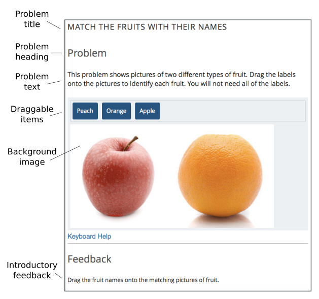
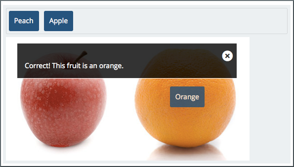
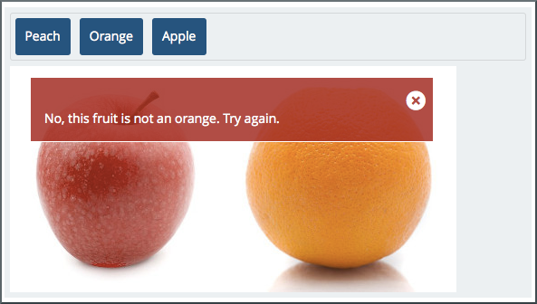
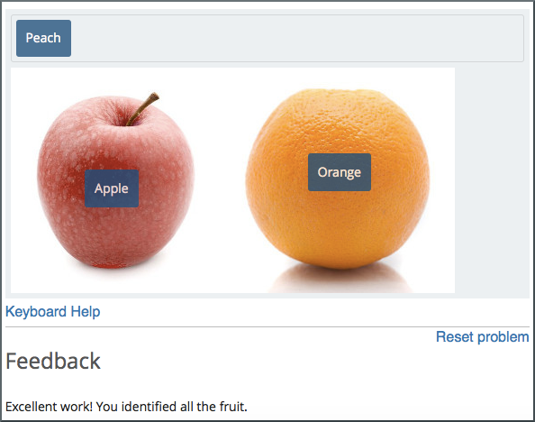
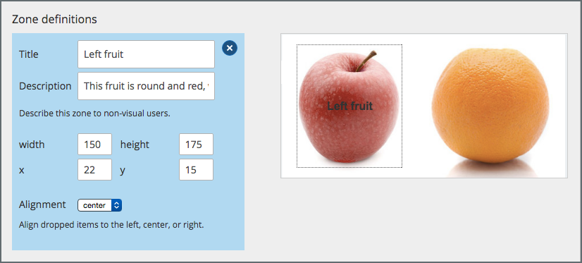
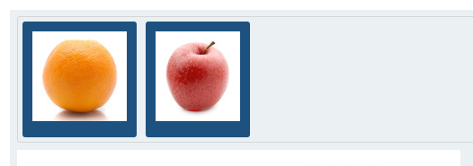

11.9. Drag and Drop Problem#
Note
EdX offers full support for this problem type.
In drag and drop problems, learners respond to a question by dragging text or images to a specific location on a background image. This section explains how to use drag and drop problems in your course.
Note
This drag and drop problem type is intended as a replacement for an older drag and drop problem type. This drag and drop problem type includes significant improvements and you should use it for any new course development. For more information about the previous, deprecated drag and drop problem type, see Drag and Drop Problem (Deprecated).
11.9.1. Overview of Drag and Drop Problems#
A drag and drop problem includes a background image and one or more items that learners can drag into target zones on the background image. You can include as many draggable items and as many target zones as you need. You can include decoy items that do not have a target, and you can include decoy targets that do not correspond to draggable items.
When learners view a drag and drop problem in the LMS, the problem includes a top section and a bottom section. Learners drag items from the top section on to the background image in the section below it.
The way that a learner selects, or grabs, an item depends on the type of browser that the learner uses. For example, a learner might click and hold on a draggable item with a mouse pointer to select it, drag the item to a target, and release the mouse pointer to drop the item on the target. A learner who accesses the problem on a mobile device with a touch screen might swipe an item from the top section into a target zone. A learner who uses a keyboard interface might use the navigation keys to select an item and then match it to a target zone.
You can configure a drag and drop problem to give learners unlimited attempts to match items to target zones or you can configure it to behave restrictively, like a test.
In standard mode, the problem gives learners unlimited attempts to match items and it provides immediate feedback to indicate whether an item is matched correctly.
In assessment mode, learners must match all of the draggable items to target zones and then submit the problem. The problem does not reveal whether items are matched correctly until the learner submits the problem.
For more information about assessment mode and standard mode, see Choosing a Drag and Drop Problem Mode.
The following image shows an example drag and drop problem.
{kind=link}
The following image shows the success feedback message that learners see when they match a draggable item with its target zone. Each draggable item has its own success feedback message.
{kind=link}
The following image shows the error feedback message that learners see when they match a draggable item with an incorrect target zone. Each draggable item has its own error feedback message.
{kind=link}
The following image shows a completed drag and drop problem. The final feedback message informs the learner that the problem is complete.
{kind=link}
11.9.1.1. Understanding Background Images#
The background image for a drag and drop problem is the surface that learners drag items onto.
A target zone is a rectangular area on the background image. You can show or hide the borders of a zone for learners. You can add titles for zones or leave the Title field empty. However, you must fill in the Description field for each zone. The description is only exposed to screen readers. The description must describe the content of the zone for visually impaired learners. For example, a zone that includes an apple might have a description that says “A round, red fruit with a stem.”
A background image must fit within the course screen. The LMS automatically scales images that are too wide. If you choose a background image that is extremely large, you should consider how it appears to learners after scaling. The width of the course screen depends on the device and browsing software that a learner uses.
You define a target zone by specifying its width, height, horizontal offset
(x), and vertical offset (y). Each specification is in pixels. The
horizontal offset is the distance between the left side of the background image
and the left side of the target zone. The vertical offset is the distance
between the top of the background image and the top of the target zone.
The following image shows a background image and target zones in the drag and drop problem editing dialog box. For more information about editing drag and drop problems, see Creating a Drag and Drop Problem.
{kind=link}
Note
The pixel coordinates that you use to specify the size and location of target zones are also used by common image editing software. You can open a background image in an image editing program to find the pixel coordinates of a target zone.
11.9.1.2. Understanding Draggable Items#
A draggable item is a rectangle that contains either a label or an image. Learners grab draggable items from the top of a drag and drop problem and drag them to targets on the background image.
You can set the size of the rectangle for a draggable item as a percentage of the width of the problem. If you do not specify the size, the LMS sets it based on the length of the text in the label or the size of the image in it. You can set the background color and the label text color for the items in a problem.
Each draggable item can match one target zone on the background image, multiple target zones, or no target zones.
Each item must have a text label to identify it in the drag and drop problem. If you include only a text label, that label appears in the draggable item. If you include both a text label and an image for an item, the image appears as its label.
11.9.1.3. Using Draggable Items with Images#
The following image shows draggable items with images. For examples of items with text, see Overview of Drag and Drop Problems.
{kind=link}
Images for draggable items have alternative image descriptions. The alternative description explains the image content in text. If a learner cannot access the visual image content, the text description helps that learner to complete the problem.
Images for draggable items must fit within the top section of the problem. The LMS automatically scales large images to fit. If you use a large image in a draggable item, you should consider how that image appears after scaling.
Note
If an image file is unavailable, or cannot be displayed, the LMS displays the text description as the button label.
11.9.1.4. Choosing a Drag and Drop Problem Mode#
You can configure drag and drop problems to allow learners to experiment with matching draggable items to target zones until all items are matched correctly, or to require that learners match all items to target zones without any input and then submit their attempts for grading. You can choose either Standard Mode or Assessment Mode to control the behavior of the problem.
In standard mode, learners have unlimited attempts to match items and the problem provides immediate feedback to indicate whether an item is matched correctly.
In assessment mode, learners must match all of the draggable items to target zones and then choose to submit the problem. The problem does not reveal whether items are matched correctly until the learner submits the problem. You can limit the number of attempts a learner is allowed, or allow unlimited attempts.
11.9.1.4.1. Using Standard Mode#
Standard mode configures a drag and drop problem to give learners unlimited attempts to match draggable items with target zones until all of the items are matched to the correct targets. Each time a learner drops an item on a target zone, the problem reports whether the match is correct. If the match is not correct, the draggable item is returned to the item bank for a new attempt.
A learner completes a drag and drop problem in standard mode when all of the items are matched to target zones correctly. Learners receive the maximum score for the problem when the problem is complete.
11.9.1.4.2. Using Assessment Mode#
Assessment mode configures a drag and drop problem to behave like a test. In assessment mode, learners must match all of the draggable items to target zones before the problem reveals whether the items are matched correctly.
Learners select Submit when they believe that they have completed the problem. If all items are matched correctly, the problem is complete. If any items are not matched correctly, and the maximum number of attempts has not been reached, the learner can correct items and select Submit again. When the learner reaches the maximum number of attempts, the problem is complete.
The score for the problem is calculated by dividing the maximum score based on the percent of draggable items that are matched correctly. If a learner attempts the problem multiple times, the score for the best attempt is the final score for the problem.
In assessment mode, you can specify the number of times that learners can submit a drag and drop problem. If you allow more than one attempt, the problem reveals which items are correctly matched and gives learners an opportunity to move items that are not correct. If you do not specify a limit, learners have unlimited attempts.
11.9.2. Creating a Drag and Drop Problem#
To create a drag and drop problem, follow these steps.
In the unit where you want to create the problem, under Add New Component select Drag and Drop.
Studio adds the drag and drop problem to the unit.
Select Edit. The Editing dialog box opens.
Configure your drag and drop problem. For detailed information about individual controls in the Editing dialog box, see Understanding the Drag and Drop Editing Controls.
The Editing dialog box includes multiple screens. Configure each screen and select Continue. On the final screen, select Save to exit the configuration dialog box and save your changes.
In particular, configure the aspects of the drag and drop problem described below.
Edit the problem title, problem text, introductory feedback, and final feedback for the problem. For more information about how the text in these fields appears in a drag and drop problem, see Overview of Drag and Drop Problems.
Specify a background image in the Background URL field. Enter the URL of a file you have added to your course or the URL of an image on the web. For more information about working with course files, see Adding Files to a Course. For more information about background images, see Understanding Background Images.
Select Change background after you enter the URL for your background image.
If you specify the URL of an image on the web, make sure that you are legally authorized to use the image and that the image is available to learners around the world.
Remove the target zones for the example drag and drop problem. Select Add a zone to add each target zone for your problem. For more information about target zones, see Understanding Background Images.
Remove the draggable items for the example drag and drop problem. Select Add an item to add draggable items for your problem. Select a matching target zone for each item in the Zone field. Add a label, success feedback text, and error feedback text. For more information about how the text in these fields appears, see Overview of Drag and Drop Problems. For more information about draggable items, see Understanding Draggable Items.
11.9.3. Understanding the Drag and Drop Editing Controls#
The following table explains the controls in the Editing dialog box.
Control |
Explanation |
|---|---|
Problem title |
The heading that appears above the drag and drop problem. For an example, see Overview of Drag and Drop Problems. |
Show title |
Controls whether the problem title appears above the problem in the LMS. |
Problem mode |
Controls whether the problem allows learners to experiment with matching draggable items to target zones (standard mode) or requires learners to match all items before providing feedback and optionally restricts the number of attempts (assessment mode). For more information, see Choosing a Drag and Drop Problem Mode. |
Maximum attempts (assessment mode only) |
Controls the number of times that learners can match items to target zones and submit the problem for grading. If you do not enter a maximum number, learners have unlimited attempts. For more information, see Choosing a Drag and Drop Problem Mode. |
Maximum score |
The total number of points that learners receive for completing the problem. For more information about scores and grading, see Establishing a Grading Policy For Your Course. |
Problem text |
Text that appears above the problem in the LMS. You can use this text to provide instructions or explain the problem. For an example, see Overview of Drag and Drop Problems. |
Show “Problem” heading |
Controls whether the word Problem appears above the problem text. |
Introductory Feedback |
The text that appears in the feedback section of the problem before a learner begins. |
Final Feedback |
The text that appears in the feedback section of the problem after a learner matches all items to their target zones. |
Background URL |
The URL of the image that contains target zones for the problem. The URL can be relative to a file you add to your course or to a file on the web. For more information, see Understanding Background Images. You must select Change background when you enter a new URL in this field. If you do not select Change background, the new value will not be saved when you save other changes in the Editing dialog box. |
Background description |
A description of the background image. This description is used by learners who cannot access the visual image. |
Display label names on the image |
Controls whether the text for target zones appears on the background image in the LMS. |
Display zone borders on the image |
Controls whether the outlines of target zones appear on the background image in the LMS. |
Zone Text |
A name for a target zone. You select the name of a target zone in the configuration for draggable items. |
Zone Description |
Text that describes a target zone. This description is available to learners who cannot access the target zone visually. |
Zone width |
The horizontal size of a target zone in pixels. |
Zone height |
The vertical size of a target zone in pixels. |
Zone X |
The horizontal distance (in pixels) between the left edge of the background image and the left edge of a target zone. |
Zone Y |
The vertical distance (in pixels) between the top edge of the background image and the top edge of a target zone. |
Zone Alignment |
Controls the way that the problem aligns draggable items after learners drop them on a target zone. Available options are “left”, “center”, and “right”. |
Add a zone |
Adds a set of controls for a new zone to the Editing dialog box. |
Background color |
The color that appears behind the text or image label of a draggable
item. You can specify the color using a hexadecimal color code
(including the |
Text color |
The color of the text label for a draggable item. You can specify the
color using a hexadecimal color code (including the |
Item Text |
Controls the text that appears on the draggable item in the problem. |
Item Zones |
Controls the target zones that match the draggable item. Learners must drag the item to any one of the target zones that you select. |
Item Image URL |
(Optional) the URL of an image that appears on a draggable item. The image appears on the draggable item in the problem. The URL can be relative to a file you add to your course or to a file on the web. |
Item Image description |
Text that describes the image label for a draggable item. The description is used by learners who cannot access the visual image label. |
Item Success Feedback |
The text message that appears above the background image when a learner places a draggable item on its matching target zone. For an example, see Overview of Drag and Drop Problems. This is an optional configuration. If you do not enter a success feedback message, the LMS will not display one. |
Item Error Feedback |
The text message that appears above the background image when a learner places a draggable item on an incorrect matching target zone. For an example, see Overview of Drag and Drop Problems. This is an optional configuration. If you do not enter an error feedback message, the LMS will not display one. |
Item Show advanced settings |
Opens additional controls for configuring a draggable item. |
Item Preferred width |
The horizontal size of a draggable item as a percent of the problem width. The percent value must be a whole number between 0 and 100. |
Add an item |
Adds a set of controls for a new draggable item to the Editing dialog box. |
11.9.4. Changing the Visual Style of a Drag and Drop Problem#
You can change the visual appearance of drag and drop problems in your courses.
The Background color and Text color controls for the draggable items in a drag and drop problem set the appearance of items for an individual problem. You can choose colors for the background and text of items when you create or edit a drag and drop problem.